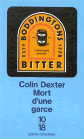

|
 |


|
|
|
||||
 |
|
|
| CHAPITRE PREMIER |
||
Il eut des nausées intermittentes
le mardi. Le mercredi, il fut souvent malade. Le jeudi, il avait eu des
nausées, mais ne fut malade que de temps en temps. Tôt dans
la matinée du vendredi – vidé, léthargique,
infiniment las –, il trouva non sans peine la force de se traîner
de son lit jusqu'au téléphone pour s'excuser auprès
de ses supérieurs du poste de police de Kidlington de ce qui avait
tout l'air de s'annoncer comme une absence en ce jour de la fin novembre. A son réveil, le samedi matin, il se rendit compte avec joie qu'il se sentait considérablement mieux ; de fait, en s'installant à la cuisine de son appartement de célibataire du nord d'Oxford, dans un pyjama aussi gaiement rayé qu'un transatlantique du Lido, il se demandait si son estomac pourrait supporter une gaufrette de Weetabix quand le téléphone retentit. – Ici, Morse, dit-il. – Bonjour, monsieur. (Une voix agréable !) Ne quittez pas s'il vous plaît, le surintendant voudrait vous parler. Morse ne quittait pas. Pas beaucoup le choix, n'est-ce pas ? Pas du tout le choix, en fait ; et il parcourut les gros titres du Times qu'on venait de fourrer dans la fente de la boîte aux lettres dans la petite entrée, en retard, comme d'habitude le samedi. – Je vous passe le surintendant, reprit la même voix agréable ; juste un instant, s'il vous plaît ! Morse ne dit mot ; mais il pria presque (c'était quelque chose pour un athée de la Basse Église1 comme lui !) pour que Strange se dépêche, prenne la ligne et lui dise ce qu'il avait à dire... La sueur lui perlait sur le front et de la main gauche il fouilla la poche supérieure de son pyjama à la recherche de son mouchoir. – Ah ! Morse ? Allô ? Ah, navré d'apprendre que vous êtes un peu mal fichu, mon vieux. C'est la saison, quoi. Le beau-frère l'était – voyons, quand donc ? –, y a une quinzaine de jours ? Non ! je mens – cela devait être y a trois semaines, au moins. Enfin, cela vous fait une belle jambe, hein ? A plus grosses gouttes, la sueur avait reparu sur le front de Morse qui l'essuya en marmonnant quelques borborygmes déférents et approbateurs dans le combiné. – Je ne vous ai pas tiré du lit, j'espère ? – Non... non, monsieur. – Bien. Bien ! J'ai seulement voulu prendre des nouvelles, c'est tout. Heu... Dites donc, Morse ! (A l'évidence, les pensées de Strange avaient atteint une conclusion.) Inutile que vous veniez aujourd'hui – complètement inutile ! A moins, bien sûr, que vous vous sentiez d'un seul coup beaucoup mieux. Nous pouvons à peu près nous débrouiller ici. Les cimetières sont pleins de gens indispensables, pas vrai ? – Merci, monsieur. C'est très gentil à vous d'avoir téléphoné, je suis très touché, mais je suis théoriquement de congé ce week-end, de toute façon. – Vraiment ? Ah ! c'est bien ! C'est, heu... très bien, quoi ! Vous permet de rester au lit. – Peut-être, monsieur, fit Morse excédé. – Vous me dites que vous étiez levé, malgré tout ? – Oui, monsieur. – Eh bien, retournez vite vous coucher, Morse ! Cela vous donnera l'occasion d'un très bon repos – pour ce week-end, je veux dire –, n'est-ce pas ? C'est juste ce qu'il faut – un peu d'repos – quand on est mal fichu – exactement ce que le toubib a dit à mon beau-frère – mais quand donc, au juste... ? Par la suite, Morse croyait avoir conclu cette conversation téléphonique de façon adéquate – en exprimant une inquiétude convenable pour le beau-frère convalescent de Strange ; il croyait se rappeler s'être passé à nouveau la main sur un front à la fois trempé et glacé – avoir aspiré deux ou trois fois profondément puis s'être précipité en direction de la salle de bains... Ce fut Mrs. Green, la femme de ménage qui venait les mardi et samedi matin, qui appela le 999 immédiatement pour demander une ambulance. Elle avait trouvé son employeur le dos collé au mur, dans l'entrée ; conscient, apparemment sobre, assez présentable, excepté ces taches d'un pourpre foncé sur le devant de son pyjama de transatlantique – des taches dont la couleur autant que la texture lui évoquaient précisément le marc au fond d'un percolateur. Et elle en connaissait la signification précise, parce qu'un médecin indélicat et cruel lui avait bien fait comprendre – il y avait cinq ans de cela – que si elle l'avait appelé immédiatement, Mr Green serait peut-être encore... – Oui, c'est ça, s'entendit-elle dire – pour une fois impérieuse et autoritaire. Juste au sud du rond-point de la Banbury Road. Oui. Je vous attendrai. A dix heures et quart, ce même jour, un Morse à moitié réticent seulement consentait à ce qu'on l'installe dans une ambulance, où, en chaussons, enveloppé dans une couverture grise et râpeuse sur un pyjama propre, il prit place, sur la défensive, en face d'une femme entre deux âges, en uniforme, qui semblait considérer comme un affront personnel son refus de s'étendre sur la civière et qui lui fourra d'un air morne et silencieux une cuvette réniforme en émail blanc dans le giron tandis qu'il vomissait une fois de plus abondamment et bruyamment et que l'ambulance gravissait Headley Way, s'engouffrait à gauche dans l'hôpital John Radcliffe puis s'arrêtait devant le service des urgences. Étendu (sur un chariot d'hôpital, à présent), Morse se dit qu'il eût pu mourir une demi-douzaine de fois peut-être sans que personne n'enregistre son départ. Mais il avait toujours été impatient (surtout à l'hôtel, quand il attendait son petit déjeuner), et l'attente ne fut probablement pas aussi longue qu'il l'imaginait avant qu'un employé subalterne en blouse blanche remplisse pour lui, d'un air désinvolte, un questionnaire qui allait des noms de ses parents les plus proches (aujourd'hui tous disparus, en ce qui le concernait) jusqu'à son surnom habituel (tout aussi inexistant, hélas !). Pourtant, une fois passé ces rites d'initiation – une fois qu'il fut entré dans le club, en quelque sorte, et eut signé les formulaires –, Morse s'aperçut qu'on lui témoignait une attention beaucoup plus grande. Consciencieuse, une jeune infirmière surgit de quelque part, prit de la main gauche une montre fixée à son revers impeccablement amidonné et le pouls du patient de la droite ; mesura ensuite sa tension en lui serrant sur le bras les lanières noires avec une férocité qui lui semblait tout à fait inutile ; puis elle inscrivit ses résultats sur un diagramme (intitulé MORSE, E.) d'un air si tranquille qu'on se disait que seules les irrégularités les plus dramatiques auraient pu l'inquiéter. La même infirmière se préoccupa enfin de la question de sa température ; Morse se sentait un peu ridicule, étendu avec le thermomètre pointant hors de la bouche ; on retira l'instrument, consulta l'indication, apparemment décevante, on le secoua trois fois avec énergie, comme s'il s'agissait de donner quelques petits revers dans un match de ping-pong, puis on le lui remit sous la langue, sensation toujours aussi désagréable. – Suis-je censé survivre ? risqua Morse tandis que l'infirmière inscrivait ses nouveaux résultats sur sa fiche. – Vous avez de la température, répondit froidement la jeune fille. – Je croyais que tout le monde avait de la température, marmonna le malade. Mais l'infirmière lui tournait déjà le dos pour examiner le nouvel arrivé. Un adolescent, les jambes plâtrées de boue, le haut du corps pris dans un maillot de rugby rayé rouge et noir, venait d'arriver sur son chariot – le front zébré d'une épouvantable cicatrice de cyclope. Pourtant, il semblait à Morse tout à fait à l'aise tandis que le même employé subalterne l'interrogeait en détail sur ses antécédents, sa religion, ses parents. Et, tout aussi à l'aise quand la même infirmière le sonda avec son stéthoscope, sa montre, son thermomètre. Morse ne put qu'envier la familiarité aussitôt établie entre le jeune garçon et la jeune fille. Soudain – presque cruellement – Morse réalisait que cette jeune personne l'avait pris pour ce qu'il était, lui : un bonhomme qui s'était frayé un chemin jusqu'à la cinquantaine et qui allait devoir affronter les problèmes vaguement infra dignitatem des hernies et des hémorroïdes, des infections urinaires et – oui ! – des ulcères duodénaux. On avait laissé à sa portée la cuvette réniforme et Morse faisait de violents efforts pour vomir, quoique sans effet, quand un jeune interne (à peine la moitié de son âge) vint le trouver et passa en revue les rapports de l'ambulance, de l'administration, du personnel médical. – Vous avez d'assez sales ennuis à l'estomac, vous l'avez compris ? – Personne ne m'a encore rien dit, répliqua Morse en haussant légèrement les épaules. – Mais il ne faut pas s'appeler Sherlock Holmes pour se douter qu'il y a quelque chose qui ne va vraiment pas à l'intérieur, non ? Morse allait répondre quand l'interne continua. – Et vous venez d'arriver, je crois ? Si vous nous le permettez, Mr., heu, Morse, n'est-ce pas ? – si vous nous le permettez, nous tâcherons de vous en dire davantage dès que possible, d'accord ? – Je vais très bien, en fait, répondit, humilié, l'inspecteur principal de police tout en s'étendant pour dénouer la contraction qui s'était faite dans ses épaules. – Vous n'allez pas très bien, je le crains ! Dans le meilleur des cas, vous avez un ulcère à l'estomac qui a brusquement décidé de saigner – Morse ressentit un petit tressautement d'angoisse quelque part dans le diaphragme – et au pire, vous avez un « ulcère perforé » comme on dit ; et si tel est le cas... – Si c'est le cas... ? reprit Morse, à voix basse. Mais le jeune médecin ne répondit pas immédiatement et tâta, serra, travailla les replis de chair autour de l'abdomen du patient. – Trouvez quelque chose ? s'enquit celui-ci en quémandant un sourire. – Vous pourriez perdre une dizaine de kilos sans problème. Votre foie est dilaté. – Mais je croyais que vous veniez de parler de l'estomac ! – C'est bien de lui qu'il s'agit ! Vous avez eu une hémorragie stomacale. – Qu'est-ce que... quel est le rapport avec mon foie ? – Buvez-vous beaucoup, Mr. Morse ? – Eh bien, on prend tous un ou deux verres par jour, non ? – Buvez-vous beaucoup ? (La même formule – prononcée un demi-ton plus bas, par exaspération.) Aussi flegmatique que le permettait son début de panique, Morse haussa une nouvelle fois les épaules : – J'aime bien boire une chope de bière, oui. – Combien de pintes buvez-vous par semaine ? – Par semaine ? couina le malade, le visage assombri comme celui d'un enfant qu'on oblige à résoudre de tête une multiplication difficile. – Par jour, alors ? suggéra l'interne pour l'aider. – Deux ou trois, je suppose, fit Morse en divisant le vrai chiffre par trois. – Buvez-vous de l'alcool ? – De temps en temps. – Quelle sorte ? Morse haussa une nouvelle fois ses épaules raidies. – Du scotch ; je me sers parfois une goutte de scotch. – Combien de temps vous dure une bouteille de whisky ? – Ça dépend de sa taille. Mais, comprenant que sa tentative d'humour était peu appréciée, il multiplia rapidement la durée par trois : – Une semaine – dix jours – à peu près. – Combien de cigarettes fumez-vous par jour ? – Huit... dix, répondit Morse, qui commençait à comprendre le jeu, en divisant ou multipliant rapidement par trois. – Faites-vous parfois de l'exercice – marche, course, vélo, squash... ? Mais Morse n'eut pas le temps de reprendre ses tables de calcul, il se jeta sur la cuvette laissée à sa portée. Tandis qu'il vomissait, abondamment cette fois, l'interne observa non sans trouble le marc mêlé aux éloquentes taches de sang écarlate – sang journellement désoxygéné par une abondance de nicotine puis libéralement lubrifié à l'alcool. Pendant un certain temps, après cela, l'esprit du patient resta vague. Par la suite, cependant, il croyait se souvenir d'une infirmière penchée sur lui – la même jeune infirmière qu'auparavant ; il revoyait les doigts joliment manucurés de sa main gauche qui s'emparait de la montre ; pouvait presque lire dans ses pensées tandis que, le sourcil froncé, elle louchait sur l'équation problématique établie entre son pouls et les trente secondes du chronomètre... A ce moment, Morse comprit que l'Ange de la Mort avait agité les ailes sur sa tête ; et il ressentit un brusque frisson de peur car il se mettait à penser pour la première fois qu'il allait mourir. Il se représenta, l'espace d'une ou deux secondes, la notice nécrologique louangeuse, le paragraphe flatteur. |
||
© Colin Dexter, 1989 © Editions 10/18, département d’Univers Poche, 1994, pour la traduction française. Tous droits réservés. Toute reproduction, même partielle, par quelque procédé que ce soit, est interdite. |